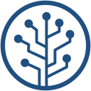
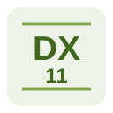

CONCEPT / 作品テーマの概念図 PROJECT 01 ↗
CONCEPT / 作品テーマの概念図 PROJECT 01 ↗
PROJECT 01 / 就職作品・仮題
1vs1対戦における
マッチングサービスの技術デモ
対戦相手を組み合わせる仕組みを、画面・ログ・構成図を通して紹介します。
画像と詳しい説明を見るPORTFOLIO / SELECTED WORKS
西岡慶太郎 ／ ネットワークエンジニア志望
Go言語、MySQL、AWSなどに力を入れて学んでいます。
目に見えないサービスをさらに洗練させていきたいです。
01 / FEATURED PROJECT
1vs1対戦を支える、マッチングサービス。
CONCEPT / 作品テーマの概念図 PROJECT 01 ↗
PROJECT 01 / 就職作品・仮題
対戦相手を組み合わせる仕組みを、画面・ログ・構成図を通して紹介します。
画像と詳しい説明を見る02 / LANGUAGES & TOOLS
学習している技術と、これから紹介する活用経験。

CLOUD
使用したサービスや構築内容は、今後追記します。

LANGUAGE
授業や制作で使用した経験があります。

LANGUAGE
学習内容や実装した機能は、今後追記します。

DATABASE
データの設計・操作の経験は、今後追記します。

VERSION CONTROL
ソースコードの変更履歴を管理するバージョン管理システム。

REPOSITORY HOSTING
Gitリポジトリの管理・共有に使うサービス。

GIT CLIENT
Gitを画面上で操作できるGUIクライアント。

GRAPHICS API
ゲームなどのグラフィックス描画に使用するAPI。

LANGUAGE
使用した制作物や実装内容は、今後追記します。

DEVELOPMENT ENVIRONMENT
コードの編集・ビルド・デバッグを行う統合開発環境。
03 / ABOUT ME
学んでいる分野、制作を始めたきっかけ、これから取り組みたいことを書きます。応募先で挑戦したいことにつながる内容を選びましょう。
CONTACT
ご覧いただき、ありがとうございます。
s211207.keitaro0305@ecc.ac.jp
メール・GitHub・発表資料のリンクを追加できます。